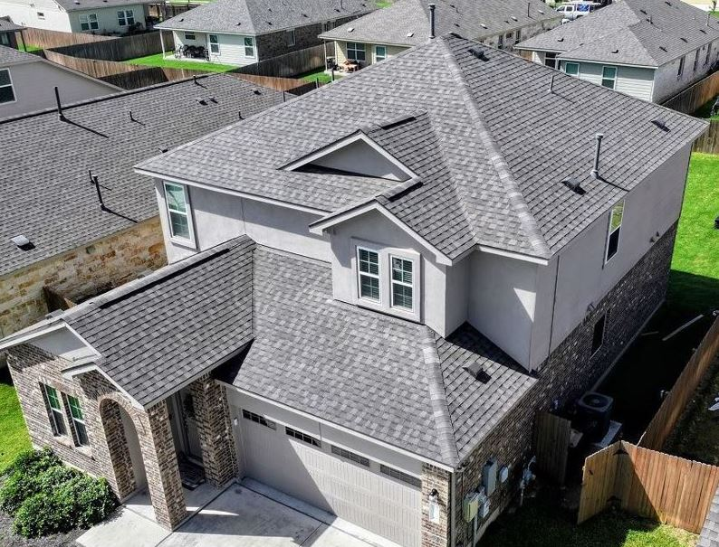

Roofing Experts Serving Liberty Hill Homes
Verstera Roofing has completed roof inspections, maintenance, and repairs for homeowners throughout Liberty Hill and northern Williamson County. As one of Central Texas’ fastest-growing areas, Liberty Hill features a mix of newer construction, acreage properties, and established homes — each with unique roofing needs.
Our team is familiar with common Liberty Hill roof concerns including builder-grade materials, early shingle wear, ventilation challenges, flashing details, and storm-related damage from frequent Central Texas wind and hail events.
Whether you need preventative maintenance, leak repair, or a long-term roofing upgrade, we bring local experience and honest recommendations — not guesswork.
Schedule Your Liberty Hill ConsultationRoofing Services for Liberty Hill Homeowners
Residential Roofing
Residential roofing services tailored to Liberty Hill homes, including asphalt shingle repairs, upgrades, and full roof replacements.
Roof Maintenance & Preventative Care
Proactive roof maintenance designed to identify small issues early and extend the lifespan of Liberty Hill roofs.
Leak Detection & Roof Repair
Accurate leak detection and repairs for common Liberty Hill problem areas such as pipe penetrations, flashing, valleys, and ventilation components.
Storm & Hail Damage Repairs
Reliable post-storm roof inspections and repairs after Central Texas wind and hail events, including documentation and insurance claim assistance when needed.
Metal & Tile Roofing
Premium roofing upgrades including stone coated steel , impact-resistant shingles, and synthetic tile systems built for long-term durability.
Roof Replacement Planning
Straightforward guidance for Liberty Hill homeowners planning ahead for roof replacement — helping you make informed decisions before emergencies arise.